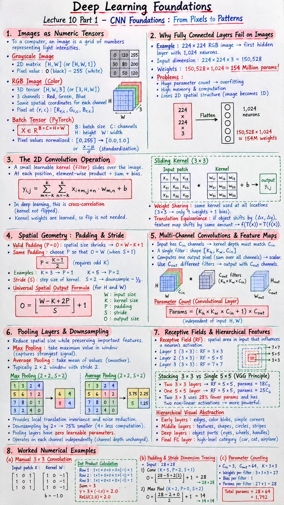

Executive Summary & Formula Sheet
Core Concept: Convolutional Neural Networks (CNNs) replace massive, fully-connected matrix multiplications with localized, translation-invariant kernel filters. By enforcing two core inductive biases—local connectivity (pixels close together are correlated) and weight sharing (a feature detector useful in the top-left is equally useful anywhere in the image)—CNNs drastically reduce parameter counts while hierarchically extracting spatial patterns from edges to textures to semantic object parts.
- Spatial Output Size (Height / Width): $$O = \left\lfloor \frac{W - K + 2P}{S} \right\rfloor + 1$$
- Same Padding Formula (to preserve spatial size \(O = W\) when \(S=1\)): $$P = \frac{K - 1}{2} \quad (\text{requires odd kernel size } K)$$
- Convolutional Layer Learnable Parameters: $$\text{Params} = \left( K_h \times K_w \times C_{\text{in}} + 1 \right) \times C_{\text{out}}$$
- Output Tensor Shape: $$\text{Shape} = \left[ N, \, C_{\text{out}}, \, H_{\text{out}}, \, W_{\text{out}} \right]$$
- Pooling Layer Parameters: $$\text{Params} = 0 \quad (\text{fixed deterministic aggregation})$$
- Two Stacks of \(3 \times 3\) Convolutions Receptive Field: $$\text{Effective RF} = 3 + (3 - 1) = 5 \times 5 \quad (\text{with } 18 \text{ weights vs } 25 \text{ weights})$$
Lecture 10 Part 1 Visual Cheatsheet

Click image to open high-resolution version in new tab
1. Digital Images as Numeric Tensors
1.1 Grayscale vs Multi-Channel RGB
To a computer, an image is fundamentally a grid of discrete numbers representing light intensities:
- Grayscale Images: Represented as a 2D spatial matrix of shape \([H, W]\) (or single channel \([H, W, 1]\)). Each pixel is an integer scalar between \(0\) (absolute black) and \(255\) (pure white).
- Color RGB Images: Represented as a 3D tensor of shape \([H, W, 3]\) (or \([3, H, W]\)). The three color channels—Red, Green, and Blue—share the exact same spatial pixel coordinates. A pixel at coordinate \((r, c)\) contains a 3-element vector \([R_{r,c}, G_{r,c}, B_{r,c}]\).
1.2 Spatial Matrix Representation & Tensor Shapes
In deep learning frameworks (PyTorch), image batches are formatted as 4-dimensional tensors:
Where \(B\) is the batch size, \(C\) is channel depth, \(H\) is image height, and \(W\) is image width. Pixels are routinely normalized from integer range \([0, 255]\) into floating-point numbers in range \([0.0, 1.0]\) or standardized via \(\frac{x - \mu}{\sigma}\) to stabilize gradient descent.
1.3 Why Fully Connected Layers Fail on Images
Suppose we feed a modest \(224 \times 224\) RGB photograph into a standard Multi-Layer Perceptron (MLP) whose first hidden layer has 1,024 neurons:
- Input dimension: \(224 \times 224 \times 3 = 150,528\) input values.
- Weights for first hidden layer alone: \(150,528 \times 1,024 \approx \mathbf{154,140,672}\) parameters (~154 Million weights)!
This explosive parameter count leads to catastrophic overfitting, prohibitive GPU memory consumption, and complete loss of 2D spatial geometry when flattening the image into a 1D vector.
2. The 2D Convolution Operation
2.1 The Sliding Kernel & Dot Product
The core building block of a CNN is the convolutional filter (kernel): a small matrix of learnable weights (e.g. \(3 \times 3\) or \(5 \times 5\)). The kernel slides across the spatial dimensions of the input image step-by-step. At each position, it computes the element-wise product with the overlapping image patch, sums all values together, and adds a scalar bias:
2.2 Mathematical Formulation of Cross-Correlation
In signal processing, mathematical convolution flips the kernel horizontally and vertically before sliding. Deep learning implementations omit the flip and perform cross-correlation. Because kernel weights \(w\) are learned end-to-end via backpropagation, learning an unflipped kernel is mathematically equivalent and computationally faster.
2.3 Weight Sharing & Translation Equivariance
- Weight Sharing (Parameter Reuse): The same small kernel slides across every spatial location. A \(3 \times 3\) filter has only 9 weights plus 1 bias, regardless of whether the image is \(32 \times 32\) or \(4000 \times 4000\)!
- Translation Equivariance: If an object shifts by \((\Delta x, \Delta y)\) in the input image, its activated feature representation shifts by the exact same amount in the output feature map: \(f(T(x)) = T(f(x))\).
3. Spatial Geometry: Padding & Stride
3.1 Spatial Shrinkage & Valid Padding
When sliding a \(K \times K\) kernel across an unpadded \(W \times W\) input, the kernel cannot hang off the edges. The output spatial dimension naturally contracts to \(W - K + 1\). This unpadded mode is called Valid Padding (\(P = 0\)). For example, a \(32 \times 32\) image convolved with a \(5 \times 5\) filter shrinks to \(28 \times 28\). In deep networks with tens of layers, spatial dimensions would prematurely shrink to zero!
3.2 Same Padding & Zero Border Extension
To preserve spatial dimensions and prevent pixel information at the image boundaries from being under-sampled, we add a frame of zeros around the perimeter, known as Zero Padding (\(P\)).
Same Padding: Padding chosen specifically such that the output spatial resolution exactly matches the input resolution (\(O = W\)) when stride \(S = 1\):
For a \(3 \times 3\) kernel, \(P = \frac{3 - 1}{2} = 1\). For a \(5 \times 5\) kernel, \(P = \frac{5 - 1}{2} = 2\). This is why convolutional kernels almost universally have odd dimensions (\(1\times 1, 3\times 3, 5\times 5, 7\times 7\)).
3.3 Stride & The Universal Spatial Output Formula
Stride (\(S\)) is the step size the kernel hops across the image after each dot product. When \(S = 1\), the kernel moves 1 pixel at a time. When \(S = 2\), the kernel hops 2 pixels, downsampling the spatial resolution by approximately half.
For input spatial dimension \(W\), kernel size \(K\), padding \(P\), and stride \(S\):
This exact equation applies identically to height (\(H\)) and width (\(W\)).
4. Multi-Channel Convolutions & Feature Maps
4.1 3D Filter Volumes Matching Input Channels
When the input has multiple channels \(C_{\text{in}}\) (e.g. 3 for RGB or 64 for hidden feature maps), the depth of a single kernel filter must strictly match \(C_{\text{in}}\)!
A single filter is actually a 3D block of weights with shape \([K_h, K_w, C_{\text{in}}]\). To compute a single output pixel, the filter performs element-wise products across all \(C_{\text{in}}\) channels simultaneously and sums all products into a single scalar value.
4.2 Creating Output Channels via Multiple Filters
How do we obtain an output with multiple channels \(C_{\text{out}}\)? We apply \(C_{\text{out}}\) separate 3D filters in parallel! Each individual filter learns to detect a distinct feature (e.g. Filter 1 detects vertical edges, Filter 2 detects green patches, Filter 3 detects diagonal textures). The outputs are stacked along the channel axis to create an output tensor of shape \([C_{\text{out}}, H_{\text{out}}, W_{\text{out}}]\).
4.3 Exact Parameter Count Formula
Every filter contains \(K_h \times K_w \times C_{\text{in}}\) weights plus 1 shared bias term. For \(C_{\text{out}}\) filters:
Crucially, the parameter count is completely independent of input image spatial size \(H\) and \(W\)!
5. Pooling Layers & Downsampling
5.1 Max Pooling vs Average Pooling
Pooling layers reduce spatial dimensionality while preserving dominant features:
- Max Pooling: Slides a small window (typically \(2 \times 2\) with stride \(S = 2\)) and outputs the maximum value in each patch. It captures the strongest signal or feature activation regardless of minute sub-pixel position.
- Average Pooling: Computes the arithmetic mean of all values in the patch. It provides smoother spatial aggregation but can dilute sharp edge features.
5.2 Translation Invariance & Noise Reduction
By discarding precise spatial coordinates within each \(2 \times 2\) window, max pooling provides local translation invariance: small shifts or rotations of the input do not alter the pooled output. Furthermore, downsampling by \(2\times\) cuts the spatial tensor size by \(75\%\) (\(4\times\)), dramatically speeding up computation in downstream layers.
5.3 Zero Learnable Parameters Property
Pooling operations are purely deterministic mathematical functions. Pooling layers have zero learnable parameters (Weights = 0, Biases = 0). Pooling operates on each channel independently, leaving channel depth \(C\) completely unchanged.
6. Receptive Fields & Hierarchical Features
6.1 Concept of the Effective Receptive Field
The Receptive Field (RF) of a neuron in layer \(L\) is the spatial area in the original input image that directly influences that neuron's activation. In the first convolutional layer with \(3 \times 3\) filters, each neuron has an RF of exactly \(3 \times 3\) pixels.
6.2 Receptive Field Expansion Through Depth
When stacking multiple convolutional layers, the receptive field expands linearly with depth:
- Layer 1 (\(3 \times 3\) conv): RF = \(3 \times 3\)
- Layer 2 (\(3 \times 3\) conv): RF = \(5 \times 5\)
- Layer 3 (\(3 \times 3\) conv): RF = \(7 \times 7\)
A stack of two \(3 \times 3\) conv layers covers the exact same \(5 \times 5\) receptive field as a single \(5 \times 5\) layer. However:
- Two \(3 \times 3\) layers: \(2 \times (3 \times 3 \times C^2) = 18C^2\) parameters.
- One \(5 \times 5\) layer: \(1 \times (5 \times 5 \times C^2) = 25C^2\) parameters.
The stacked \(3 \times 3\) design uses 28% fewer parameters and incorporates two non-linear activation functions instead of one, granting far higher discriminative power!
6.3 Hierarchical Visual Abstraction
As the receptive field expands across deeper layers, the network learns a natural hierarchy of visual abstractions:
- Early Layers (Small RF): Low-level features (oriented edges, color blobs, simple corners).
- Middle Layers (Medium RF): Mid-level features (textures, geometric shapes, circles, stripes).
- Deep Layers (Large RF): Semantic parts (eyes, wheels, dog snouts, handles).
- Final Fully Connected Layer (Global RF): High-level category classification (car, cat, airplane).
7. Step-by-Step Worked Numerical Walkthrough
7.1 Manual 3x3 Convolution Calculation
Consider a \(3 \times 3\) image patch \(X\) and a vertical edge detector kernel \(W\) with bias \(b = -1.0\):
Compute the pre-activation output value \(y\):
- Row 1 dot product: \((10 \times 1) + (10 \times 0) + (0 \times -1) = 10 + 0 + 0 = 10\)
- Row 2 dot product: \((10 \times 1) + (10 \times 0) + (0 \times -1) = 10 + 0 + 0 = 10\)
- Row 3 dot product: \((10 \times 1) + (10 \times 0) + (0 \times -1) = 10 + 0 + 0 = 10\)
- Sum of dot products: \(10 + 10 + 10 = \mathbf{30}\)
- Adding bias: \(y = 30 + (-1.0) = \mathbf{29.0}\)
- Passing through ReLU: \(\text{ReLU}(29.0) = \mathbf{29.0}\) (strong edge detected!)
7.2 Padding & Stride Dimension Tracing
Trace the spatial dimensions for an input of shape \(28 \times 28\) passing through two successive operations:
- Conv Layer 1: Input \(28 \times 28\), Kernel \(K = 5\), Padding \(P = 2\), Stride \(S = 1\): $$O_1 = \left\lfloor \frac{28 - 5 + 2(2)}{1} \right\rfloor + 1 = \left\lfloor \frac{27}{1} \right\rfloor + 1 = \mathbf{28 \times 28}$$
- Max Pooling Layer: Input \(28 \times 28\), Kernel \(K = 2\), Padding \(P = 0\), Stride \(S = 2\): $$O_2 = \left\lfloor \frac{28 - 2 + 0}{2} \right\rfloor + 1 = \frac{26}{2} + 1 = 13 + 1 = \mathbf{14 \times 14}$$
7.3 Multi-Channel Parameter Counting Exercise
Calculate the exact number of learnable parameters in a convolutional layer with:
- Input: \(C_{\text{in}} = 3\) (RGB), Output: \(C_{\text{out}} = 64\) feature maps, Kernel: \(K = 3 \times 3\).
- Weights per filter: \(K_h \times K_w \times C_{\text{in}} = 3 \times 3 \times 3 = \mathbf{27}\) weights.
- Biases per filter: \(\mathbf{1}\) bias.
- Parameters per filter: \(27 + 1 = \mathbf{28}\) parameters.
- Total layer parameters: \(28 \times C_{\text{out}} = 28 \times 64 = \mathbf{1,792}\) parameters.
Original PDF Notes
Below is the original PDF document for Lecture 10 Part 1 (First CNN Worksheet):